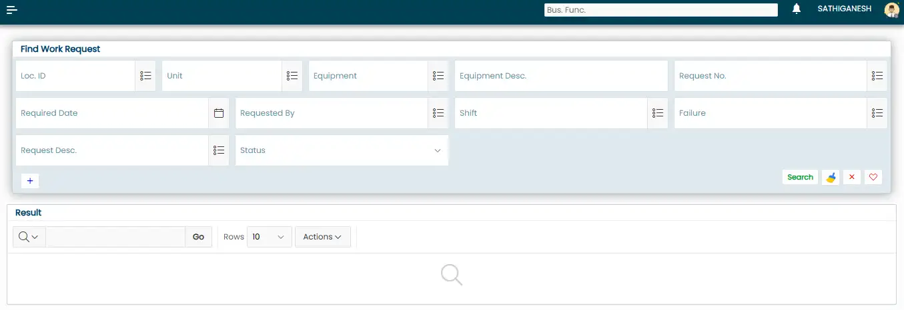
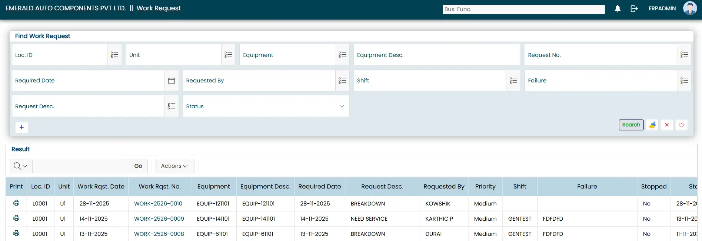
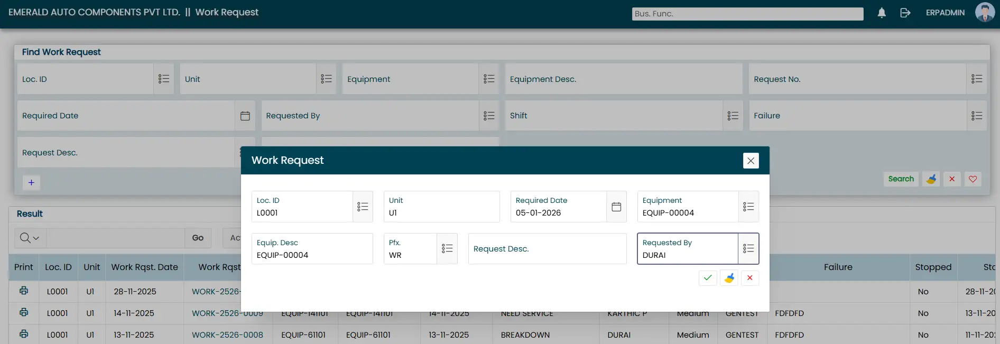
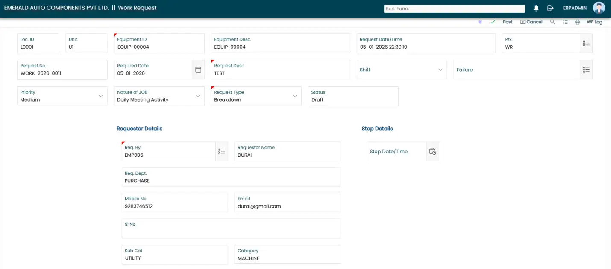
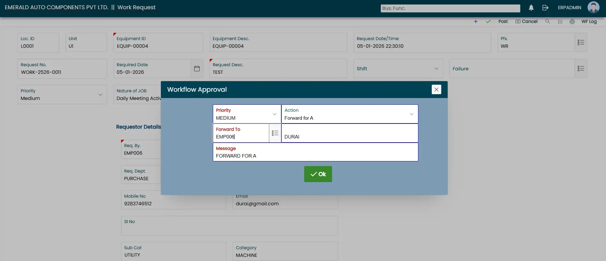

<div data-category="Plant Maintenance" data-title="Work Request" data-updated="January 27, 2026" data-contributors="RoadmapIT" data-breadcrumb="Home,Plant Maintenance,Work Request">
  <div class="page-content">
    <p>A work request in plant maintenance is a document that is used to alert the maintenance team about issues that require their attention. It highlights a problem or defect that inhibits the operation of a particular asset or facility. Work requests are created when there is sudden breakdown of machines/equipments in the work area.</p>
    <h5>Navigation path:</h5>
    <p class="fs-6">Plant Maintenance \ Transaction \ Work Request</p>
    
    <ul style="list-style-type: none; align-content: center">
      <li class="mouse-icon">Search screen displays the list of Work Request with the relevant details and its status</li>
      <li class="mouse-icon">Click on Search to filter all the records</li>
    </ul>
    
    <ul style="list-style-type: none; align-content: center">
      <li class="mouse-icon">User can filter the respective documents by entering the search parameters at the header.</li>
      <li class="mouse-icon">On clicking search button, system displays the results relevant to the search parameters entered.</li>
      <li class="mouse-icon">
        Using
        
        icon, entered search parameters can be cleared.
      </li>
      <li class="mouse-icon">
        To close the screen, use
        <i class="bi bi-x fs-4 mx-2 text-danger"></i>
        icon
      </li>
      <li class="mouse-icon">
        By Clicking the
        <i class="bi bi-plus fs-4 mx-2 text-primary"></i>
        Add button we can create Work Request for the required Equipment.
      </li>
    </ul>
    
    <ul style="list-style-type: none; align-content: center">
      <li class="mouse-icon">Enter / Select the Loc ID from LOV.</li>
      <li class="mouse-icon">Enter the required date and Request Desc.</li>
      <li class="mouse-icon">Enter / Select the Equipment from LOV.</li>
      <li class="mouse-icon">Enter / Select the Requested By from LOV</li>
      <li class="mouse-icon">
        Click on
        <i class="bi bi-check-lg fs-4 mx-1 text-success"></i>
        to create the new Work Request
      </li>
    </ul>
    
    <ul style="list-style-type: none; align-content: center">
      <li class="mouse-icon">Enter / Select the Shift and Failure if required.</li>
      <li class="mouse-icon">Enter/Select the Stop details if machine is stopped.</li>
      <li class="mouse-icon">
        Click on
        <i class="bi bi-check-lg fs-4 mx-1 text-success"></i>
        to Save the document.
      </li>
      <li class="mouse-icon">On clicking Post button, document can be sent for approval.</li>
    </ul>
    
  </div>
</div>
